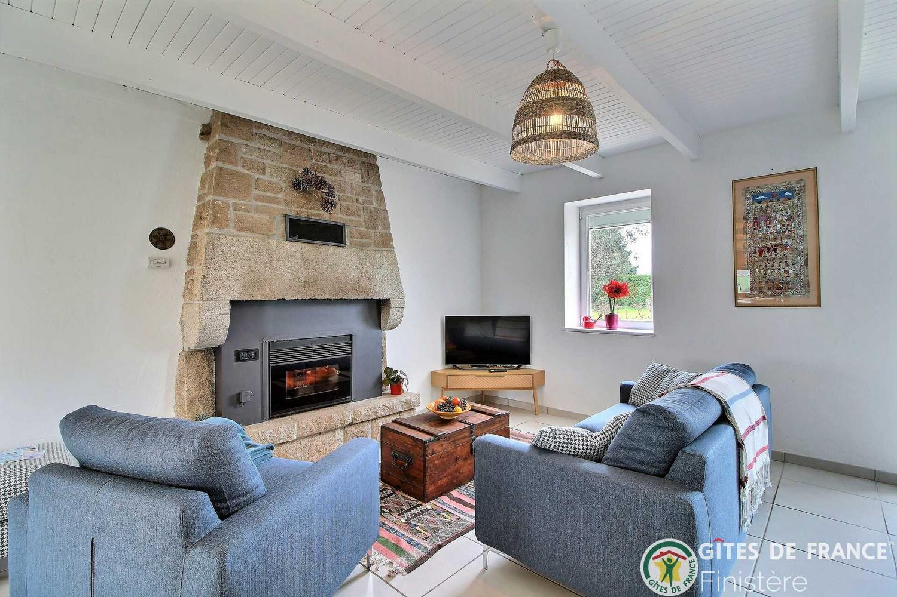
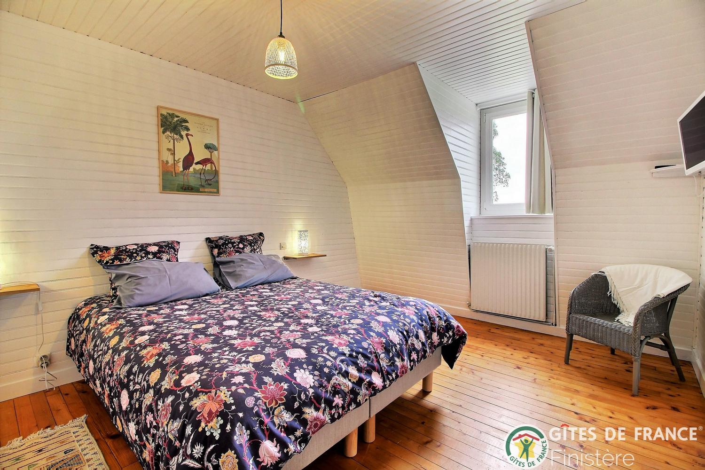
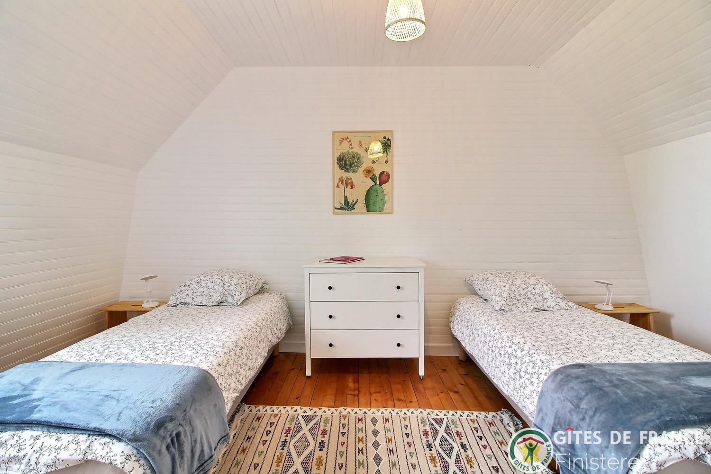
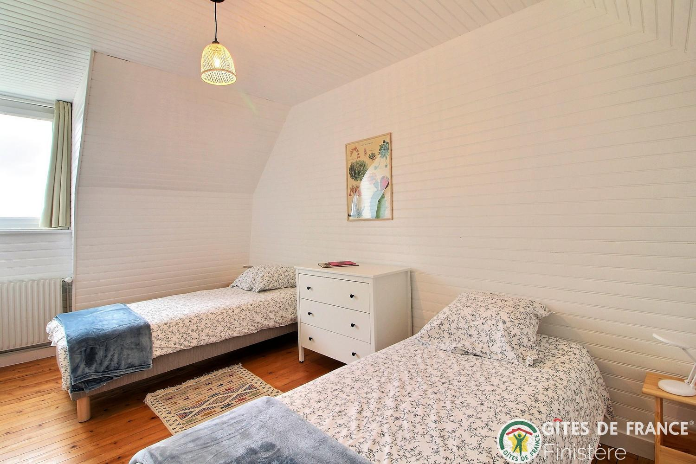

★★★★★
“A very enjoyable stay”
Spacious, clean and comfortable cottage with the peace of the countryside and a lovely view. A warm welcome from the owners — thank you for all the thoughtful touches: eggs, jam, goat's cheese.
Finistère · Brittany · France
A pretty country house just minutes from Morlaix, with sweeping views over rolling fields and the farm animals. The perfect base to explore Brittany, from the coast to the countryside.


Enjoy a pretty country house with sweeping views over the owners' sheep and the rolling fields of northern Finistère. Spacious, spotless and comfortable, it welcomes you for a quiet, green holiday just a stone's throw from the bay of Morlaix.
On the spot, taste goat's cheese and homemade jams, or meet the farm animals — a warm welcome that delights grown-ups and children alike. The location is ideal for exploring both coast and countryside: beaches, hiking trails, heritage sites and Breton crêperies await you.
A house designed for simple, restful holidays, summer and winter alike.
A glimpse of the house, the garden and the view — for the rest, come and see!







The cottage sits in open countryside in Plourin-lès-Morlaix — the ideal starting point to explore the bay of Morlaix, the beaches of the Channel coast and the landscapes of the Pays de Morlaix.


Spacious, clean and comfortable cottage with the peace of the countryside and a lovely view. A warm welcome from the owners — thank you for all the thoughtful touches: eggs, jam, goat's cheese.
An excellent week: a large, well-located, spotless cottage surrounded by greenery and pastures, with no noise at all. The region is beautiful and the owners' welcome was delightful. We will gladly come back.
The cottage is truly functional and comfortable — you feel at home in this spacious house. Very close to Morlaix, the bay and the beaches, it lets you explore this beautiful part of Brittany, on the seaside and in the countryside.
Spacious, comfortable and perfectly equipped house, spotlessly clean. Fresh flowers, crêpes, homemade jam and cider waiting for us on arrival… what a welcome! A much-appreciated extra: the shelter for the car and the bikes.
Reviews published by travellers on the Gîtes de France® listing. See all reviews
All bookings and secure payments are handled by Gîtes de France®.
From €370 per week. For rates and availability, please check the Gîtes de France® listing.
End-of-stay cleaning: €60. Security deposit: €200. Bed linen and towels provided.
For everyone's comfort and the peace of the farm animals, pets are not admitted.
Your hosts welcome you in French and share their tips about the region. Goat's cheese and homemade jams on the menu!
Bookings are made exclusively through the official Gîtes de France® website: real-time availability, secure payment and a phone booking service.
Book on gites-de-france.com